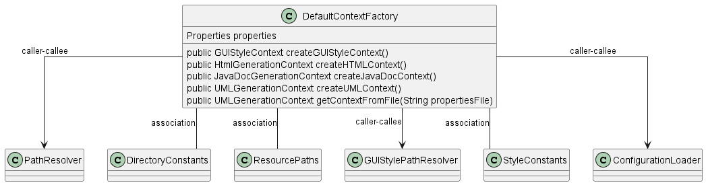

Class Diagram

Annotations
Relationships
| Type | Target | Details |
|---|---|---|
| CALLER_CALLEE | com.pjsoft.j2arch.core.util.PathResolver | |
| ASSOCIATION | com.pjsoft.j2arch.core.util.DirectoryConstants | Field: DEFAULT_INPUT_DIR |
| ASSOCIATION | com.pjsoft.j2arch.core.util.ResourcePaths | Field: TEMPLATE_JAVADOC_INDEX |
| CALLER_CALLEE | com.pjsoft.j2arch.core.util.GUIStylePathResolver | |
| ASSOCIATION | com.pjsoft.j2arch.core.util.StyleConstants | Field: DEFAULT_GUI_DARK_STYLE |
| CALLER_CALLEE | com.pjsoft.j2arch.config.ConfigurationLoader | |
| CALLER_CALLEE | com.pjsoft.j2arch.config.DefaultContextFactory |
Fields
| Visibility | Type | Name | Annotations | Description |
|---|---|---|---|---|
| private | Properties | properties | Description placeholder |
Constructors
| Visibility | Name | Parameters | Annotations | Description |
|---|---|---|---|---|
| public | DefaultContextFactory | Properties properties | Description placeholder |
Methods
| Visibility | Return Type | Name | Annotations | Description |
|---|---|---|---|---|
| public | GUIStyleContext | createGUIStyleContext() | Override | Description placeholder |
| public | HtmlGenerationContext | createHTMLContext() | Override | Description placeholder |
| public | JavaDocGenerationContext | createJavaDocContext() | Override | Description placeholder |
| public | UMLGenerationContext | createUMLContext() | Override | Description placeholder |
| public | UMLGenerationContext | getContextFromFile(String propertiesFile) | Description placeholder |